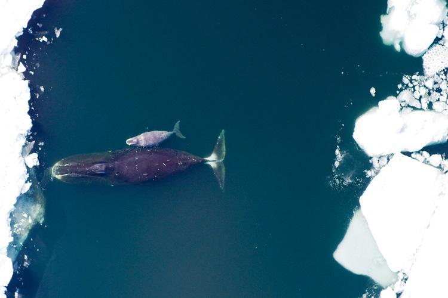

Bowhead Whale 🏹
Quick Facts
Length: 49 to 59 feet
Lifespan: about 200 years
Classification: Baleen
Distinguishing Feature(s): strong, triangular skull
Scientific name: Balaena mysticetus
Overview
Bowhead whales are second only in size to blue whales. They also have the longest baleen of any whale - the plates reach 5m in length! Living year-round in the Arctic, bowhead whales are predominantly black with the exception of grey/white patches on the front of the lower jaw, and sometimes on the narrow base of the tail. As well as lacking a dorsal fin, bowhead whales have a distinctive double-humped surface profile, an enormous arched upper jaw, and a strongly bowed mouth-line (hence the name).
Bowhead whales are associated with ice floes, which means their movement patterns are influenced by the melting and freezing of ice. Their blubber is half a metre thick, which is the thickest found on any mammal. Based on findings from the recovery of stone harpoon heads and the analysis of eye tissue, scientists believe that the bowhead whale may be the longest - living animal in the world - it is possible they can live for more than 100 years - perhaps even up to 200 years.
Flip the card for ways to help...
Co-manage subsistence harvests with Alaska Natives, reduce the risk of entanglement in fishing gear, minimize ocean noise , and develop methods to reduce vessel strikes